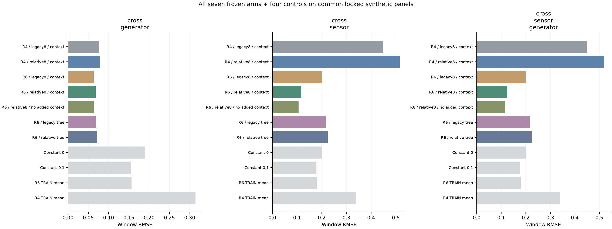
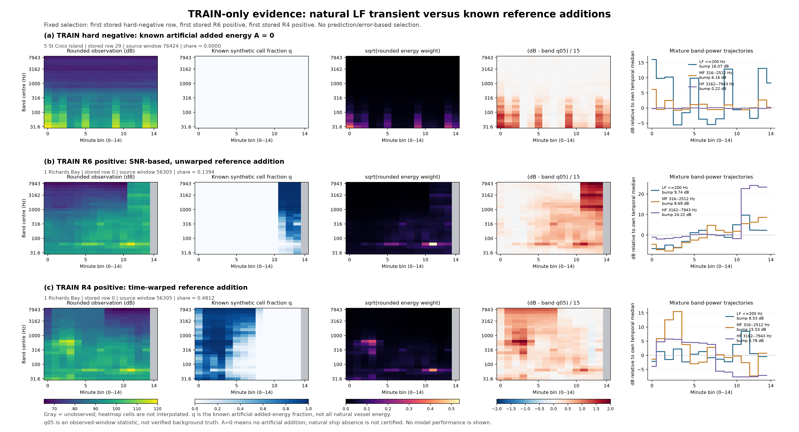

R6 · MAC CPU · 완료된 실험 기록데이터 개편과 로컬 진단 결과
Test와의 간극 감소는 아직 확인하지 못했습니다. Test를 학습에 사용하는 출처 분류·분포 맞추기는 실행하지 않았습니다. GPU 본학습과 제출도 재개하지 않았습니다.
상수 baseline RMSE
서로 다른 target 스케일입니다. 더 작은 RMSE가 Test 대표성을 뜻하지 않으며, INNER 평균은 같은 정답에서 적합한 최적 상수입니다.
R6 TRAIN ↔ INNER 출처 구분·KS
원천 창 ID 분리 5-fold AV AUC: 0.903065. Test 상대 AUC가 아닙니다.
사이트·원천 역할·hard-negative 비중 차이가 함께 반영됩니다. 인접 창의 시간 의존성이 완전히 분리된 검증은 아닙니다. 이 결과에 맞춘 재학습이나 생성기 수정은 하지 않았습니다.
모든 checkpoint 동결 후 공통 합성 패널

공식 Test 또는 전체5fold OOF 결과가 아닙니다. 악화된 모델도 모두 표시했습니다.
입력과 물리 정답 직접 확인

저장 순서로 선택한 TRAIN 사례이며 모델 예측 결과가 아닙니다. q05는 배경 정답이 아니고, 추가 A=0은 자연 선박이 없다는 뜻이 아닙니다.